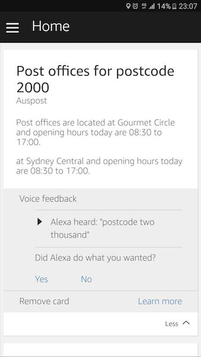

TL;DR
I will describe below my custom alexa skill.
Amazon ALexa
Recently, I have started developing alexa skills.
Alexa, the voice service that powers Echo, provides capabilities, or skills, that enable customers to interact with devices in a more intuitive way using voice. Examples of these skills include the ability to play music, answer general questions, set an alarm or timer and more.
Amazon says:
Natural user interfaces, like those based on speech, represent the next major disruption in computing.
You can now find all alexa skills on amazon.com. See the experience
To see some examples of skills to use check out this article
There is now over 3000 skills in the marketplace and growing fast
Skill
I decided to build a skill that allows consumers of an alexa enabled device to find post offices by post code in Australia.
Alexa flow

Interact with auspost skill
Now the fun part... 😛
Use the service simulator to test it out here or use an amazon echo or dot.
Alexa, open auspost
Alexa will guide you in interacting with the skill.
Sample utterances are:
Try to find post offices by post code
Alexa, ask auspost to find post offices by postcode
Follow the dialog flow to get post offices in your vicinity and the opening hours for today.
Here is a sneak preview!!
Home Cards
Interactions between a user and an Alexa device can include home cards displayed in the Amazon Alexa App, the companion app available for Fire OS, Android, iOS, and desktop web browsers. These are graphical cards that describe or enhance the voice interaction. A custom skill can include these cards in its responses.
I have created a card for the post offices in the response for future reference. You can see an example below:

Disclaimer
This skill is not currently on the marketplace.
Stay tuned for more skills!!